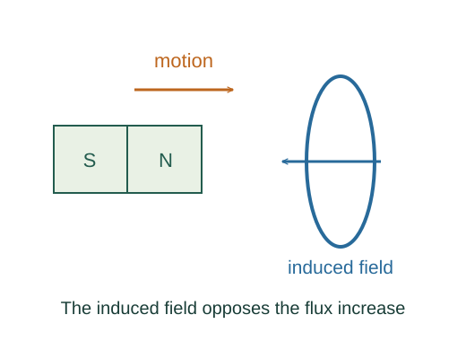

Faraday’s law, Lenz’s law, and motional emf
Faraday’s law is the empirical connection between changing magnetic flux and induced emf. The sign specifies the sense of circulation that opposes the flux change, once loop orientation is chosen.
What the symbols mean
ΦB = ∫𝐁 · d𝐀: flux per turn; N: identical turns; ℰ: loop emf; ℓ: rod length; v: rod speed.
When this applies
For the rod formula, a straight rod, velocity and magnetic field are mutually perpendicular and the rod forms part of a specified circuit.
Developing the argument

Choose a consistent loop orientation
The right-hand rule links positive circulation around the loop to a positive surface normal. Flux is signed using that normal.
State the induction law
For a stationary loop, changing field creates a circulating electric field. More generally a moving circuit also includes the force per charge 𝐯wire × 𝐁.
Apply it to a sliding rod
A rod of length ℓ moving at speed v changes circuit area at rate ℓv. In a uniform perpendicular field, the flux-change magnitude is Bℓv.
Understand the energy sign
The induced current’s magnetic force opposes the driven rod motion in this resistive circuit. Maintaining motion requires external power that becomes electrical heating.
A closer lookWhy does a resistor dissipate I²R? ↗A worked example
A 0.20 m rod moving at 3.0 m/s through a perpendicular 0.50 T field produces emf magnitude 0.30 V.
Derivation behind this calculation ↗A point to keep straight
Lenz’s law opposes the change of flux, not necessarily the original field. A steady flux produces no Faraday emf even if it is large.
Check the assumptions and derivation ↗